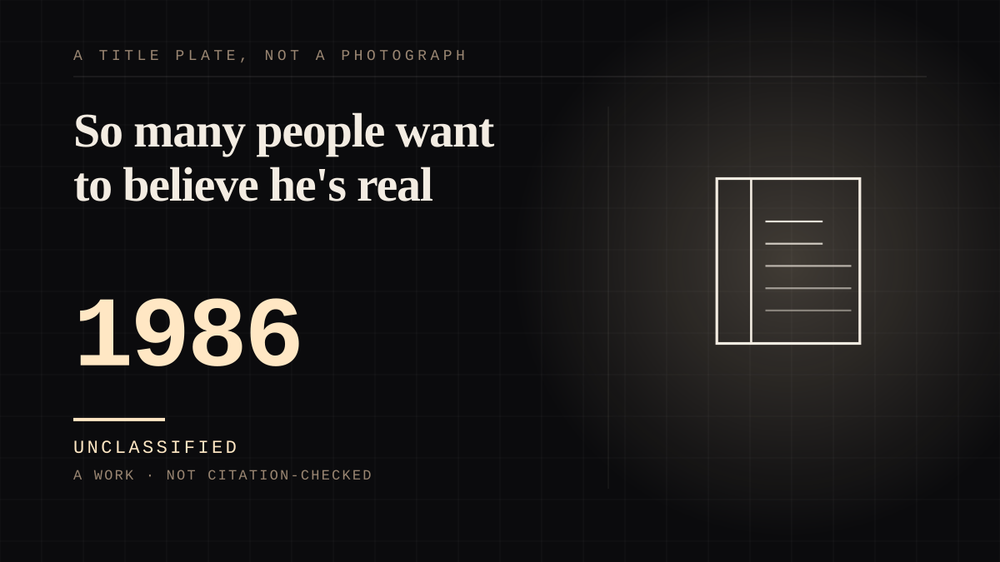

A work · 1986–1990 · Television
So many people want to believe he's real
An alien with a kitchen and a family, performed by a man who refused for four years to say how. Children cried when it ended, and the character was invited to birthday parties.

The case that proves the third axis needs a rule, because ALF is on two shelves at once and pretending otherwise would be the exact error the axis was built to stop. On the evidence he is `animate`: he has a mind the audience cannot edit, he wants things for himself (the cat), he is stated to be over two hundred and twenty years old, and he crash-lands because he followed a radio signal. On the evidence of his body he is `made`. Paul Fusco performed him inside a fur suit and guardianship of the mechanism so total that the Los Angeles Times described it as a magician refusing to reveal how his tricks work - 'When Alf walks, he looks like a 3-year-old in a bear costume toddling down the hallway', and in close-up 'it looks as if he could have several human hands stuck up his backside, mechanically moving his mouth, arms and body.' Full-body shots were performed by Michu Meszaros, uncredited. What makes it more than a technique note is that the withholding was deliberate and stated as method: 'Fusco insists that many people believe in Alf just as they believe in Santa Claus, and he is not about to spoil the illusion. So many people want to believe he's real. Alf is in fact very real to me. He has his own dressing room. He speaks for himself. I prefer to preserve that. When you know how it's done, it's just not as fascinating anymore.' That is this site's thesis in a performer talking about his own job: the audience's belief is the asset, and explaining the mechanism destroys it. The evidence that it worked is in the same piece: ALF 'is so fascinating and so realistic, in fact, that he gets invited to birthday parties nearly every day. And mothers have told cast members that their children cry every Monday night when Alf ends.' A character invented on paper in 1982, turned down for four years, then given a family, a pet to want and a government to hide from - and the one-sidedness is asymmetric on purpose. The Tanners are reciprocated; the cat is not; and ALF's own arc is the only one in the corpus that is about being afraid of being sent home.
Where it sits
1950 1950-1999 · 1986 1999
Provenance · 2 source record(s)
- retrievableThe performance and the deliberate withholding, quoted: Fusco 'guards the secret of how Alf walks and talks and moves around a desk or a television set like a magician refusing to reveal the secret of his magic tricks. When Alf walks, he looks like a 3-year-old in a bear costume toddling down the hallway. When he sits around spouting his brash opinions like a teen-age Archie Bunker, it looks as if he could have several human hands stuck up his backside, mechanically moving his mouth, arms and body.' And: 'Fusco insists that many people believe in Alf just as they believe in Santa Claus, and he is not about to spoil the illusion. "So many people want to believe he's real," Fusco says. "Alf is in fact very real to me. He has his own dressing room. He speaks for himself. I prefer to preserve that. When you know how it's done, it's just not as fascinating anymore."' Plus the evidence it worked: 'Alf is so fascinating and so realistic, in fact, that he gets invited to birthday parties nearly every day. And mothers have told cast members that their children cry every Monday night when "Alf" ends.' Also the origin: Fusco, a former high school teacher who had produced children's specials for PBS, 'created Alf in 1982 but had trouble getting a deal off the ground', and took the character to Tom Patchett.Weinstein, S. 'Alf: The Star Trek of NBC's Furry Resident Alien: How a Wisecracking Puppet Toddled Into the Hearts of Viewers.' Los Angeles Times, 23 December 1987. ↗
- retrievableDates, structure and the second performer: ALF aired on NBC from 22 September 1986 to 24 March 1990; the title character is an acronym for 'Alien Life Form' whose real name is Gordon Shumway, an alien from the planet Melmac who follows an amateur radio signal to Earth and crash-lands into the garage of the suburban California Tanner family, who take him in to hide him from the Alien Task Force; the family is social worker Willie, Kate, Lynn, Brian and a cat named Lucky 'whom ALF wishes to consume'. 'ALF was performed by puppeteer Paul Fusco, who co-created the show with Tom Patchett. However, in scenes where he appeared in full body, he was performed by Michu Meszaros, who was uncredited in the role.' Four seasons, 97 episodes. And the age: Willie and ALF's relationship is 'akin to a mix of siblings and surrogate father and son, with Willie playing the father role despite being much younger than Alf, who was stated to be over two hundred and twenty years old by the time of the series.'ALF (TV series). Wikipedia. ↗
Not yet stood behind. The entry is real. A person has not read the citation and confirmed it, so treat the date as approximate until they do.
Connected · 3 out, 0 in
Reported as a story
It sits in
The full timeline → · The database → · See it in the atlas →